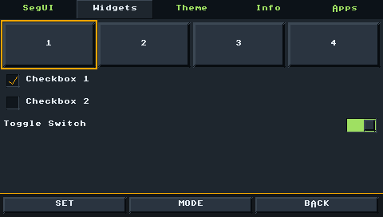
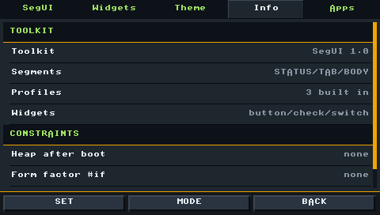

戦術通信・産業エッジにおける位置づけ (Tactical & Industrial Edge Positioning)
COMSEC 暗号鍵注入器・戦術無線機前面盤 (COMSEC & Radio Frontplate)
戦術無線機の周波数ホッピング制御盤や暗号鍵注入器（Key-Fill Device）では、形式検証可能な極小コードサイズ、数週間単位の電池持続、およびゼロ動的メモリ確保による完全なメモリ消去（Zeroize）保証が不可欠である。KEY（CALC）シェルは 84×48〜96×68 の高コントラスト反射型 LCD 上で 1 ピクセル単位の固定レイアウトを提供し、物理テンキー入力と確実な状態遷移を保証する。
Built for COMSEC key-fill loaders, frequency-hop tactical radio frontplates, and austere field calculators, KEY (CALC) operates on 84×48 to 96×68 transflective LCDs with weeks-long battery autonomy, statically auditable zero-heap C99 code, and deterministic zeroize-ready state machines.
超小型 PLC 盤・スマート計量器・安全インターロック (Micro-PLC Faceplate HMI)
DIN レール装着型マイクロ PLC、スマート電力・流量計、ポンプ・空調制御盤、および安全インターロック盤では、1 枚の小型 LCD に数値・モード・異常コードを寸分の狂いなく表示する必要がある。KEY シェルは src/desktop/ui/calc/ および src/desktop/ui/hmi/ により、上位階層と同一の TRON 設計思想を 100×100 未満の極小面へ継承し、認証取得コストと長期部品供給リスクを最小化する。
Targeting DIN-rail micro-PLCs, utility smart meters, HVAC/pump controllers, and safety interlock keypads, KEY brings the µBTRON HMI contract down to sub-100×100 panels—allowing industrial edge OEMs to standardize telemetry and keypad workflows across every product tier.
対象解像度 (Requested Resolutions)
幅・高さの双方が 100 ピクセル未満である全 6 モードが CALC（KEY）シェルを選択する。実装ソース：src/desktop/ui/calc/、src/desktop/ui/hmi/、include/btron/segui.h。
| BTRON_RES | 解像度 (Pixels) | パネル規格・実機系譜 | 主用途 |
|---|---|---|---|
| BTRON_RES_N7110_96X60 | 96×60 | Nokia 7110 | 無線機前面ステータス・暗号スロット選択 |
| BTRON_RES_N1100_96X64 | 96×64 | TI-81, Nokia 1100 / 3410 / 3510i / 6310i | 野戦計算機・COMSEC 鍵注入端末 |
| BTRON_RES_N1280_96X68 | 96×68 | Nokia 1280 / 1600 / 2600 | 高視認 DIN レール制御盤・計量器 |
| BTRON_RES_QQCIF_88X72 | 88×72 | QQCIF | 超小型エッジ計測器・センサハブ盤 |
| BTRON_RES_N5110I_84X84 | 84×84 | Nokia 5110i | 正方形マイクロ PLC 前面表示器 |
| BTRON_RES_N3310_84X48 | 84×48 | Nokia 3310 / 3330 / 5110 / 8210 (PCD8544) | 極限最小モノクロ LCD・安全インターロック |
SegUI 極小ウィジェット・キーパッド参照 (Shared Micro-Panel Primitives)
KEY（CALC）は POCKET / BAND と同じ SegUI プリミティブ（数値キーパッド、チェック・トグル、システム情報読取り、高コントラスト配色）を極小画面制約へ射影して描画する。
Native SegUI captures demonstrating the keypad, discrete widget, diagnostic readout, and high-contrast primitives compiled down to sub-100×100 KEY/CALC panels.


